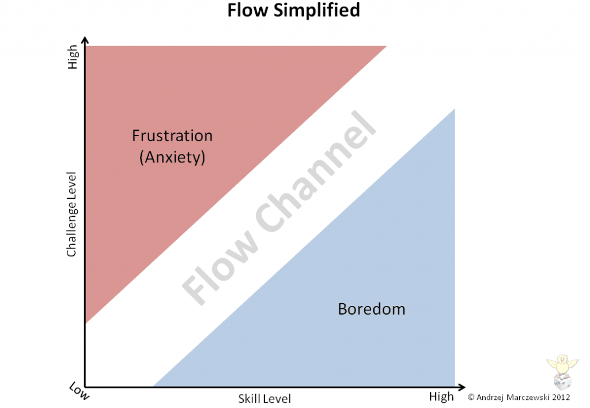
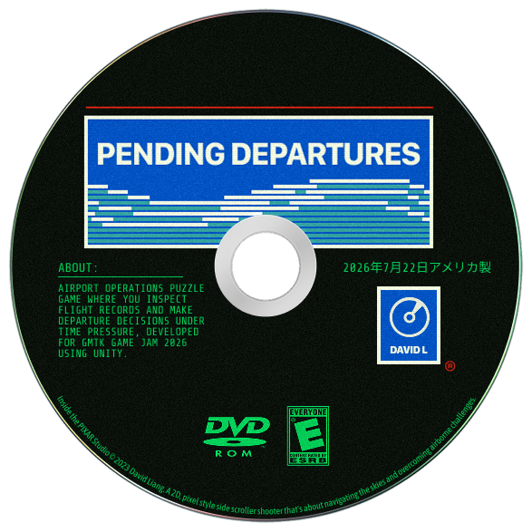

DAVID LIANG · GMTK GAME JAM 2026
Pending
Departures
An airport operations puzzle game where you inspect flight records and make departure decisions under time pressure, developed for GMTK Game Jam 2026 using Unity.
About the game
Pending Departures is an airport operations puzzle game developed for GMTK Game Jam 2026 using Unity. You play as an airline operations coordinator reviewing flight information and deciding whether an aircraft is ready to depart before time runs out.
Players compare crew, maintenance, weather, route, gate, and runway information to identify problems and make the correct departure decision.
Design Goals
The jam theme was “Countdown,” and I wanted to explore it in more than one way.
My original idea was a life narrative told through a computer screen, where the player would move through childhood, college, work, retirement, and eventually the end of life. Each stage would use countdowns in different ways: days until Christmas, time left on an exam, days until graduation, days until vacation, and eventually the realization that life itself is a countdown.
During development, I shifted the concept into an airport operations puzzle game because the countdown mechanic felt stronger when tied directly to decision making and time pressure. The player now has limited time to review flight information and decide whether an aircraft is ready to depart.
The core loop is:
Receive a flight → Review information → Cross-reference documents → Identify problems → Make a decision
Another major goal was creating a smooth learning curve. After seeing players get lost in my previous jam game, I wanted this project to teach through play instead of relying on a large tutorial.
Using the idea of flow graph, I introduced mechanics gradually so difficulty increased alongside the player's understanding. Early levels are simple, while later ones add maintenance, weather, routing, fuel, and more complex crew requirements. I tried to create a smooth learning curve by taking in feedback from last year's project. The result was somewhat successful.

Challenges
One challenge was writing information clearly enough that players interpret it the same way. While watching someone play the game live on Twitch, I noticed they struggled to connect certain pieces of information because of how they were worded. The clues made sense to me as the designer, but not always to the player. This made me think more carefully about how to make text clear without making the solution too obvious.
Another challenge was feedback. Because of the limited jam time, players only receive success or failure sound effects after each day. There is no explanation of what they got right or wrong. If I continued development, I would add a short post day report showing which decision caused the result and why.
